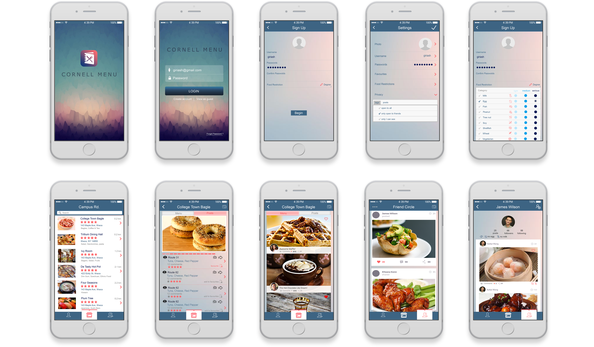
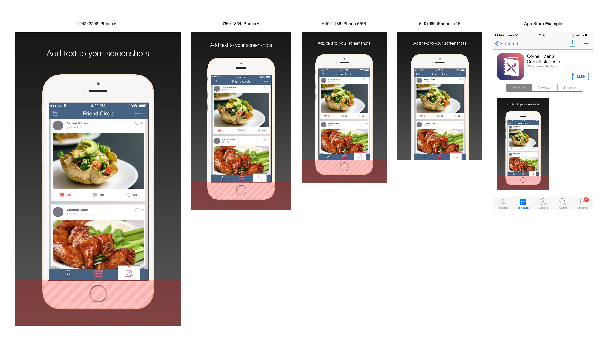
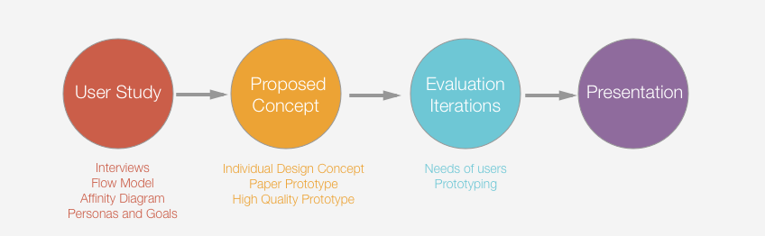
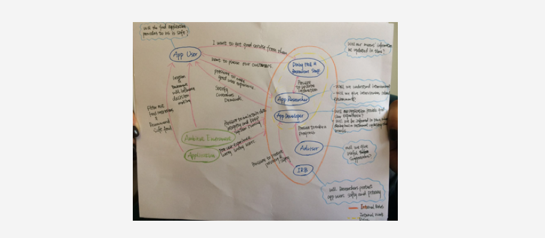
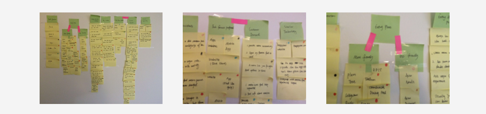
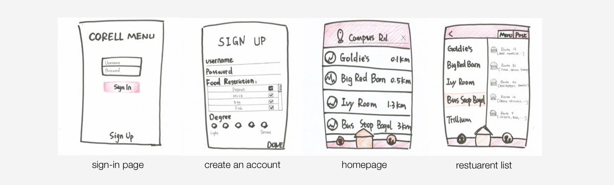
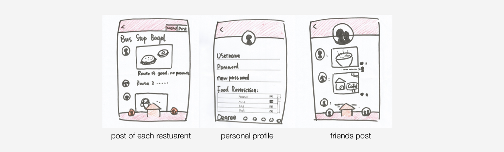
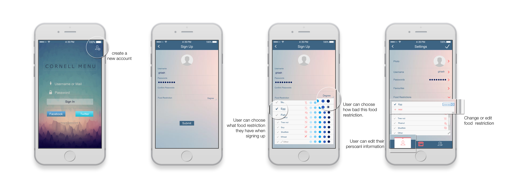
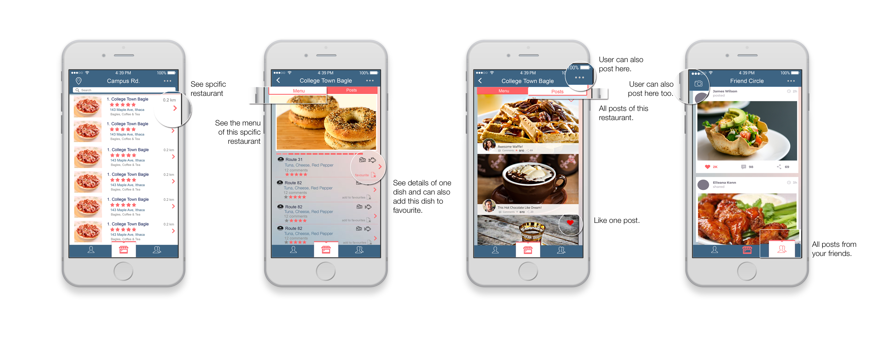
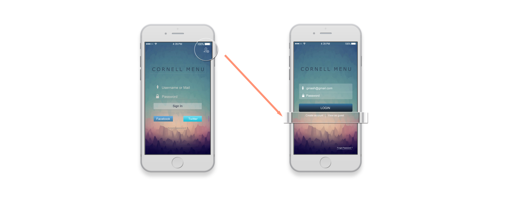

CornellMenU - IOS APP
My Role:
Visual/UI Design
UX Design
Prototyping
Team Members:
Christopher Martin
Weiting Wang
Yuanyuan Li
CornellMenU is an iOS APP aims at assisting Cornell students with extreme dietary restrictions including, but not limited to, Celiac’s disease, Crohn’s disease, Celiac’s disease, Crohn’s disease. The application will bridge the communication gap between these peoples and the retail restaurants they visit, providing the customer with only the menu items and choices that are safe to eat for a person with their condition. Through cooperation with the dining establishments in questions, we hope to eliminate customer distrust of retail restaurants and provide users with a convenient and worry-ˇfree method of ordering food on par, or even better, than that of one with no dietary restriction whatsoever.
Design output
Interactive Prototype
Design Details
Mockup
Design Porcess
Step 1: User Study & Synthesis
Interview
We first contacted Cornell Students with Disabilities Services and explained our study goals to them. We then contacted Cornell dining manager, who could give us information of food provided in Cornell dining hall/restaurant.
We conducted 6 user interviews with Cornell students (3 are vegan, 1 is allergic to peanut and tree nuts, 1 is gluten-free and 1 doesn’t eat pork). Most of these volunteers were interviewed in restaurants/meal halls to find what these places offer to volunteers. Each interview lasted about 30 minutes and had an interviewer and at least two notes taker. We asked them questions about their eating habits as well as what kind of technology or application functions they would like to make their eating experience safer and more convenient. In addition, we tried to find how many students had used Cornell NetNutrition before and what did they think of the website.
Below is our interviewers information:
Models
Flow Model:
We start with the flow model by identifying each entity from raw data we got through interviews of our target group. All entities related to our work until now could be classified into: user roles, work roles and other entities including database we need to build the application and outcome of the application.
features.pngSocial Model
Starting with the roles, we identify the application user, dining hall staff, application researcher and developer as the main ones, represented as several nearby circles near the top. We include Ambiance and work domain as nonhuman entities.
Affinity Diagram
Generate Activity Notes — During each interview, we have one note taker gathering information from interviewees. These raw data containing a lot of information needs to be organised and classified. Thus we transferred all raw data we collected into activity notes at the perspective of interviewees. We write each single piece of data we collected on a yellow note.

Requirement Statements
Personas and Goals
Step 2: Proposed Design Concept
Individual Design Concept
Low Quality Prototype - Paper Prototype

High Quality Prototype

Step 3: Evaluation and Iterations
During the evaluation sessions, the user was asked to perform five basic tasks with our application prototype , which are:
1. Creating a Personal Profile.
2. Finding a Meal.
3. Post about the Meal.
4. Follow and Friends.
5. Change your profile.
Iterations
I find there are several problems with our prototype, so I did following iterations:
1. Home page:
-Problem: The sign up function which can create a new account is not obvious.
-Critical Incidents: When new users tried to use our application, they tried to create their own profiles so that they can find specific dishes without their own food restrictions. But the sign up button was hidden in the right corner of the page. And the icon just looked like add friends button.
-Solution: Make create account function more visible. Also add function that useer can use the app without an account.

2. Other user information:
-Problem: The information of the person who users tried to follow is not abundant.
-Critical Incidents: In the post page, users could see all posts about this dish or this dining hall. But when users tried to follow people who posted, our application just asked them whether they wanted to follow and didn't present other information about these people. It was supposed to show past posts the person created and more personal information.
-Solution: Add a post history page for other users. Now, tapping avatar will lead to another page that displays their personal page, including their posting history and some basic information about them instead of just asking users if they want to follow. From this new page, the user can choose to follow or not follow the other user based now on more information than just their one post. The follow icon is on the right top.
3.